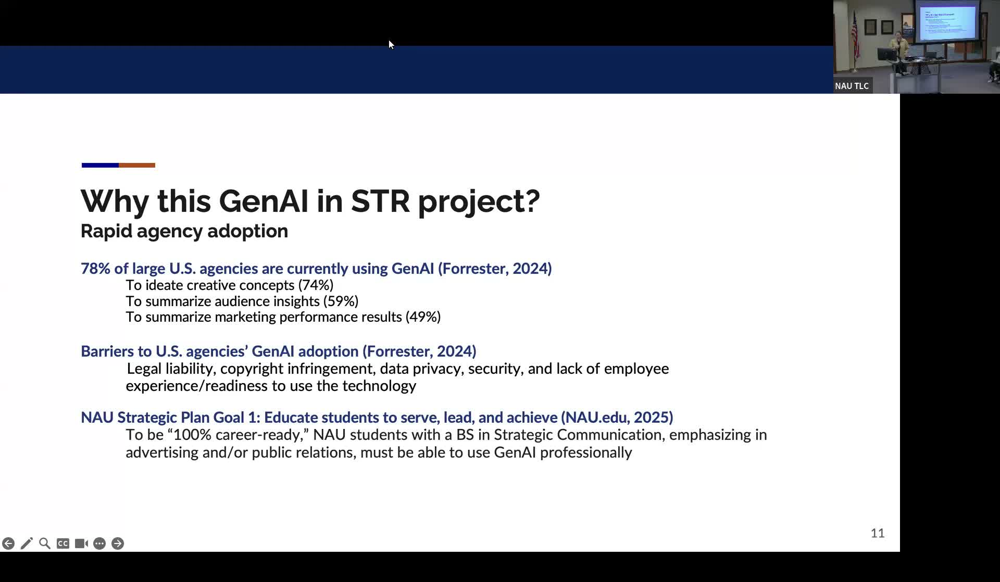
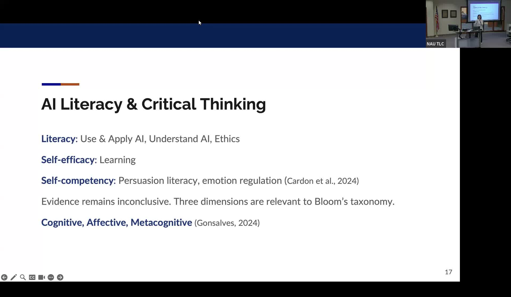

Teaching Generative AI in Strategic Communication
Building AI literacy and critical thinking in advertising and public relations courses at NAU.
Presented by Janice Sweeter, Professor of Practice in Strategic Communication, Northern Arizona University
About This Project
Generative AI is already embedded in the advertising and public relations industries: Forrester research shows that 78 percent of large U.S. agencies use GenAI, primarily for concept ideation, audience insight summaries, and marketing performance analysis. NAU's Strategic Communication program must prepare students to use these tools professionally while maintaining critical judgment. Sweeter, working with collaborators Dr. Jenny Tsai and Amy Hitt, along with student research assistants Martine Follestad-Jutilla and Claire Ewert, integrated GenAI into two courses: Advertising Campaigns (capstone) and Social Media Management and Analytics.
The project structured AI activities across three domains drawn from Bloom's taxonomy and recent AI literacy research: the cognitive domain (using and applying AI, understanding its mechanics), the affective domain (ethical and emotional engagement with AI-generated content), and the metacognitive domain (iterative prompting as a reflective process). Activities included in-class AI applications, guest speakers from the industry, and direct comparisons between AI-generated and human-generated creative concepts. Sweeter presented the findings as a top Advertising paper at the 2025 AEJMC Conference.
Project Highlights

